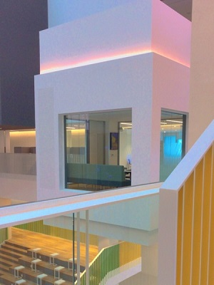

카페
카페에 들어가자 보이는 내부의 장식들이다. 간결한 둥근 스탠딩 조명이 매력적이라고 느꼈다. 벽에는 다양한 색상을 쓴 스프라이트 모양의 벽지가 단순할 수도 있었던 모양을 화려하게 만들어주었고, 그것이 조명과도 잘 어우러진다. 현대적인 느낌의 디자인들이 시멘트로 된 벽과도 조합도 좋다.
벽
이 벽은 단순하게 사각형 벽돌로만 이루어진 벽들과는 차이가 나는 디자인이다. 사각형 모양의 돌 중간에 구멍을 뚫고 테두리 부분만 남긴 돌을 사용하였다. 그것을 여러 개 쌓아 벽을 만듦으로써 어떠한 무늬가 만들어졌다. 단순한 변화 한 가지로 차별성을 주고 무늬를 만들어서 디자인을 만들어낸 것이다.
불판
원형이나 사각형 모양 불판을 쓰는 평범한 고깃집과는 달리 불판의 모양이 삽 모양이었다. 차별성 있는 특이한 디자인이다. 그뿐만 아니라 삽의 특징을 활용하여 삽을 잡을 수 있는 막대 부분을 손잡이로 해서 불판을 마음대로 옮기기 쉽게 디자인한 것이다. 그것은 실용성까지 겸비한 디자인이다.
창문
우리나라 전통의 멋과 디자인을 살린 한옥 인테리어의 카페이다. 자리에 앉으면 보이는 카페의 창문은 한옥의 느낌과 현대적인 디자인이 함께 어우러져 조화를 이루고 있었다. 그 너머로 한옥의 지붕과 풍경이 보여 고급스럽고 고풍적인 분위기가 느껴졌고, 한옥의 정교함을 찾아볼 수 있었다.
꽃
독특한 꽃 디자인이다. 생화를 마치 조화처럼 일정한 간격으로 배열한 것이 독특하다고 생각했다. 주변이 잔디라 다 초록빛인데 그 앞에 꽃으로 기둥을 만들어 세우면서 자연스럽게 시선이 갈 수밖에 없었다. 꽃의 색상 배치를 비슷한 색끼리 하기도 하고 완전히 다른 색을 옆에 두기도 하면서 예쁜 색감을 이루었다.
카페
주방처럼 디자인되어 있는 카페 내부 진열대의 모습이다. 진열대에는 여러 가지 주방기구가 걸려있었고, 진열대 위에는 유럽의 가정집을 연상시키는 듯한 느낌으로 잼 깡통이나 영어 책, 레이스 손수건 등으로 디자인 해놓았다. 장식 하나하나가 특색 있었고 유럽풍의 소품과 아기자기한 소품들을 놓으면서 디자인의 분위기를 한층 높여주었다.
와인 거치대
집의 수납장 위에 놓여있는 바퀴 모양의 와인 거치대이다. 바퀴 모양이 없었다면 평범한 와인 거치대였겠지만, 바퀴 모양을 추가로 디자인함으로써 독특한 디자인이 되었다. 와인과 함께 주변의 분위기와 인테리어에 영향을 줄 수 있는 소품이다. 와인이 없더라도 인테리어 장식으로 이용할 수 있을 것이다.
큐브형 회의실
건물 내부가 독창적으로 디자인되어 있다. 공중 부양하듯 설치되어 있는 큐브형 회의실은 마치 케이블카를 연상케 한다. 공중에 있는 회의실 디자인이 불안한 이미지를 주면서도 사각형의 큐브 모양이 안정적인 느낌을 주기도 했다. 뻥 뚫린 공간에 회의실을 공중에 띄우는 듯한 디자인은 새로웠다.
에그체어

현대적이고 간결하면서도 독특한 디자인을 가진 의자이다. 세련된 디자인임에도 불구하고 엄청 편안할 것이라는 생각이 먼저 들게 한다. 소파와 의자, 중간쯤의 의자이다. 곡선적인 형태가 안락한 분위기를 조성했고 의자에 앉았을 때는 감싸는 듯한 사용감이었다. 의자의 본래 역할을 충실히 하며 세련됨까지 갖춘 디자인이다.
브라질 생두 선별기
카페 안에 브라질 생두 선별기가 있는 게 신기했고 그 크기는 엄청난 규모였다. 현지의 선별기를 카페 안에 두면서 규모와 디자인 덕분에 카페의 분위기를 장악했고, 생두 선별기의 디자인이 영화나 광고에서만 보던 고전적인 이미지 같아서 카페의 분위기가 더 고급스러우면서 깊은 인상을 주었다.